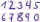
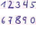
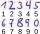

"... technologies that complement and strengthen human capabilities in seeing, hearing, analyzing, deciding, and acting."
Translated from Microsoft, Was ist künstliche Intelligenz? Definition & Funktionen von KI
"... a poor choice of words in 1954."
Someone on Twitter (now "X") cited by Sci-fi writer Ted Chiang
"... a field of research in computer science that develops and studies methods and software that enable machines to perceive their environment and use learning and intelligence to take actions that maximize their chances of achieving defined goals."
Russel & Norvig, Artificial Intelligence: A Modern Approach
For whom is AI used and with what goal?

"... the ability of a machine to display human-like capabilities such as reasoning, learning, planning and creativity."
European Parliament, What is artificial intelligence and how is it used?
methods & software
- code
- algorithms
- programs
maximize chances
- probability
- optimization
defined goals
- grasp object
- recognize number
- generate text
- maintain engagement
"... a field of research in computer science that develops and studies methods and software that enable machines to perceive their environment and use learning and intelligence to take actions that maximize their chances of achieving defined goals."
Russel & Norvig, Artificial Intelligence: A Modern Approach
learning & intelligence
- take information in
- adapt algorithms
take actions
- move gripping arm
- predict value
- generate word
- select content
perceive environment
data as representation of the environment
A clear set of instructions for solving a problem.
Composed of a finite number of well-defined steps.
Program: Implementation of an algorithm in executable code.
Problem
Many handwritten numbers that need to be digitized.
Humans can recognize the numbers very well, but that takes thime. Can this not be automated?

We want to develop a program that takes scans of payment slips as input and outputs (digital) numbers that with high probability correspond to the handwritten numbers.
- Use domain knowledge: we know where numbers appear on the scan and how many numbers should be there.
- Limit the problem: we only need to develop an algorithm that recognizes a single number in an image.

Computational thinking: Deconstructing a problem such that it can be solved with an algorithm.
A simple idea:
- Pictures consist of pixels.
- If some of the pixels are black or white, the image must show a "Nine".
Handwriting can be very different, however.
Take information in to adapt the algorithm.
- Enough labeled examples of numbers.
- An algorithm that can learn from the examples.


- Machine learning is a subfield of Artificial Intelligence.
- AI systems use machine learning to extract patterns from data, perceive their environment, make decisions, or adapt.
- Open questions
- What types of machine learning algorithms are there?
- How do they learn?
- Artificial Intelligence has many definitions.
- At its core machine learning: Algorithms that can learn from data to solve problems.
- Example: Recognizing numbers on a payment slip.
- Example for
- Supervised learning: Learning from examples.
- Classification: Recognizing class membership of examples.
- Computer Vision: Application area for machine learning.